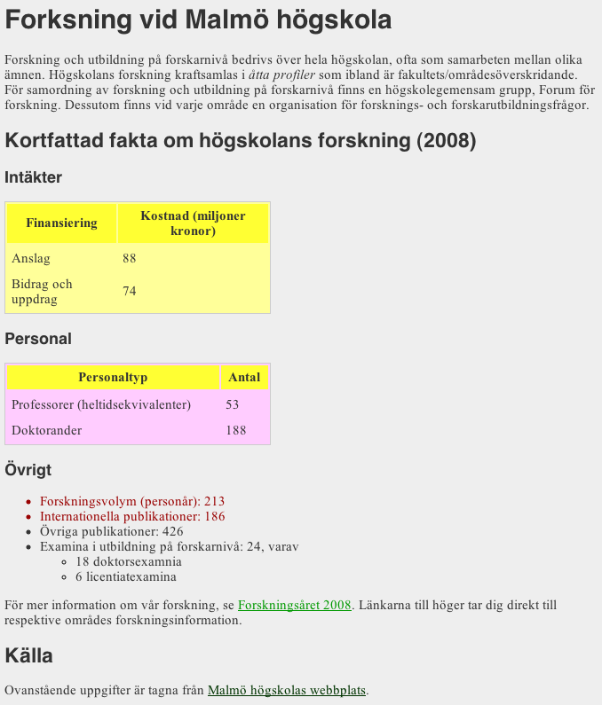

Laboration 2b: CSS
CSS, Cascading Style Sheets, utgör grunden för i princip alla visuella aspekter av en modern webbplats. CSS är inte begränsat till webbsidor i HTML, utan är ett generellt språk för stilmallar med många användningsområden. Webben är dock dess största anvädningsområde och det är detta som ska utforskas i denna laboration.
Lärandemål
Efter genomförd laboration ska du:
- veta hur CSS skrivs (selektor och deklarationsblock).
- veta hur CSS appliceras på ett HTML-dokument.
- kunna ändra grundläggande CSS-egenskaper, som färger och storlekar
Uppgift
I denna laboration ska du utgå ifrån ett färdigt HTML-dokument för att gradvis bygga på detta med CSS. På vägen kommer du att stöta på många av de grundläggande koncept som krävs för att utforma webbsidor.
Börja med att spara hem detta HTML-dokument (högerklicka, välj “Spara som” eller motsvarande, alternativt kopiera källkoden). Studera hur detta dokument är uppbyggt - HTML-strukturen är viktigt för hur CSS-reglerna ska utformas.
När du öppnar dokumentet i en webbläsare så kommer du finna att det inte är så visuellt tilltalande. Detta kan avhjälpas med stilmall skriven i CSS! Genom en sådan stilmall kan webbläsarens standardvärde för presentation överskrivas och eget utseende definieras. Först krävs en plats att skriva CSS på - detta kan göras med elementet style, som infogas inom head:
<style type="text/css"> /* Här ska CSS skrivas */ </style>
Grundstil
När du lagt till style-taggen är det dags att faktiskt skriva lite CSS!
Om du inte gjort det, läs kurslitteratur, Opera Web Standards Curriculum och/eller Sitepoint (som följande
länkar går till) om CSS-regler,
selektorer och
deklarationsblock.
Det kan även vara bra att undersöka hur
kommentarer fungerar, eftersom välkommenterad kod alltid är lättare att förstå.
Fortsätt sedan med att skriva en CSS-regel som anger bakgrundfärg (background-color) och textfärg (color) för body (för dina färgval kan du använda Color Scheme Designer).
Övergå därefter till att ändra på textens storlek och typsnitt (fortfarande i CSS-regeln för body, eftersom den påverkar allt innehåll i dokumentet). Detta gör du med egenskaperna font-size respektive font-family
Om typsnitt - tänk på
- Alla typsnitt finns inte installerade överallt. Denna tabell kan hjälpa dig att avgöra hur vanliga typsnitt är.
- Ange gärna mer än ett typsnitt. Genom att ge en lista på flera typsnitt så kan man även styra andra- och tredjeval (osv.). Typsnitten separeras helt enkelt med kommatecken:
font-family: Helvetica, Arial, sans-serif;. - Ange alltid typsnittsfamilj som sistaval. Detta handlar oftast om typsnitt med eller utan seriffer (
sans-serifellerserif). - Om ett typsnitt har fler än ett ord i namnet så måste det anges inom citattecken, ex:
"Times New Roman". - För den intresserade finns väldigt utförlig information om typografi på webben.
- I moderna webbläsare går det dock att inkludera egna typsnitt, tack vare @font-face i CSS. På webbintro.se görs detta med hjälp av typsnitt från Google web fonts.
Extern CSS-mall
Fram till hit har du skrivit din CSS i en inbäddad mall (med taggen style). Det är nästan alltid bättre att hålla sin CSS-kod i en extern mall, alltså en helt separat fil. På det viset kan samma stilmall användas i flera HTML-dokument, samtidigt som man separerar på presentation och struktur.
Kopiera all din CSS-kod till en ny, tom textfil. Spara denna fil i samma mapp som ditt HTML-dokument, med filändelsen .css. När du verifierat att filen är sparad kan du ta bort style-taggen, inklusive allt innehåll och sedan applicera den externa mallen istället. Detta gör du genom taggen link:
<link href="minmall.css" type="text/css" rel="stylesheet">
Om dokumenttypen HTML5 används, kan attributet type hoppas över:
<link href="minmall.css" rel="stylesheet">
Du bör byta namnet minmall.css till det faktiskta filnamn som du sparade din mall som. Om allt går bra så bör ditt dokument se ut precis som innan. Kontrollera annars filnamn och att HTML-dokument och CSS-fil faktiskt är sparade i samma mapp.
Avvikande stilar & länkar
När man arbetar med CSS så är det en bra strategi att skriva så generella regler som möjligt. Det sparar jobb och gör koden mer kompakt, genom att minska upprepning. Men ofta vill man ha några avvikande egenskaper; allt bör ju inte se likadant ut. Skriv en regel som byter typsnitt för alla rubriker (h1-h6). Du kan även ändra färg eller andra egenskaper som du tycker passar.
Något som av användbarhetsmässiga skäl ofta har en distinkt stil är länkar. Dessa är också speciella i den bemärkelsen att de har en viss internaktivitet; de ser oftast annorlunda ut när de är besökta eller när muspekaren svävar ovanför. För att definiera stilar för dessa olika tillstånd används psuedoklasser. I detta skede behöver du inte fördjupa dig i vad begreppet innebär (men om du vill erbjuder W3C mer information). Studera följande exempel, som är det typiska användningen:
a{
/* Här definieras grundstilen för alla länkar */
}
a:visited{
/* Gäller bara besökta länkar */
}
a:hover, a:focus{
/* Gäller bara när muspekaren är över (hover), eller när
länken är markerad med hjälp av tangenbordet (focus) */
}
Använd denna mall för att bestämma hur dina länkar ska se ut. Se till att skillnaden mellan de tre tillstånden är tillräckligt stor så att användaren märker det.
Identiteter
Studera sedan följande tre CSS-regler. Läs igenom dem, jämför med strukturen på HTML-dokumentet och försök tänka dig vad resultatet kan bli. Klistra sedan in dessa regler i dokumentet och se vad som händer.
table{
background-color:#ffff99;
border:1px solid #cccccc;
width:300px;
}
thead{
background-color:#ffff33;
}
td, th{
padding:5px;
}
Som du bör ha noterat förändrar dessa stilregler utseendet för båda tabellerna i dokumentet. Behåll dessa stilregler, men komplettera med en ny som endast påverkar den andra tabellen (valfritt utseende).
För att åstadkomma detta behöver du kunna identifiera den andra tabellen i din CSS. Detta görs naturligt nog med HTML-attributet id. Den andra tabellen har redan en identitet definierad, id="personal". Du kan således använda selektorn #personal för att välja ut denna tabell. Skapa en sådan regel och ändra till exempel bakgrundfärgen.
Klasser
En identitet är unik och kan endast förekomma en gång i samma HTML-dokument. Du kan ha flera id med olika namn, men för att påverka flera element samtidigt bör klasser användas. Det fungerar på precis samma vis som identiteter, men HTML-attributet heter, naturligt nog, class och i CSS används punkt (.minklass) istället för brädgård (#mittid).
Skapa en CSS-regel som påverkar klassen viktig och ge den ett utmärkande utseende. De två översta listpunkterna har denna klass och får således detta utseende.
Validering och feedback
När du är klar kan ditt dokument se ut som bilden nedan. Exakta färger, typsnitt, osv. är valfri - men du får gärna jobba med att göra dokumentet (mer) visuellt tilltalande!

Såväl kursare som labbassistenter kan ge bra feedback. Se även till att såväl HTML som CSS validerar.